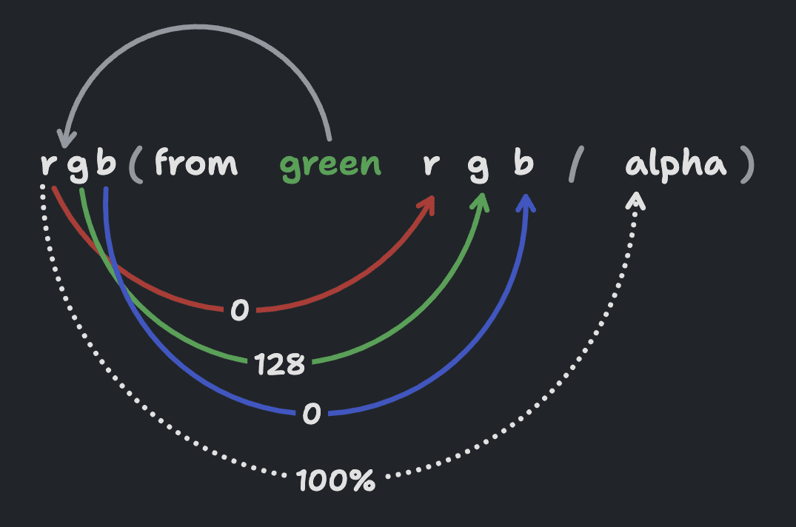
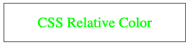
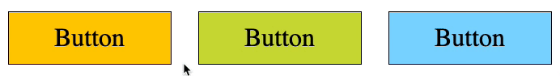
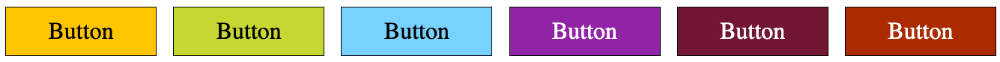
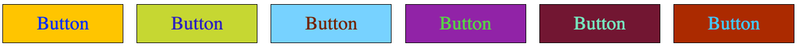
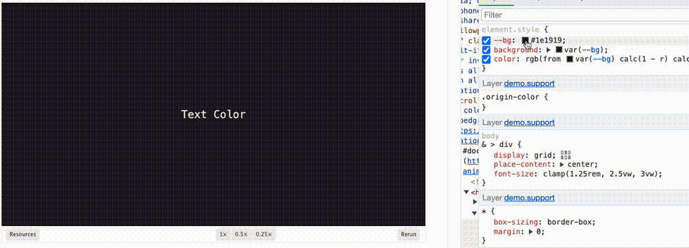

HaoTian · 2024-12-10 10:54:27
在 23 年的 CSS 新特性中，有一个非常重要的功能更新 -- 相对颜色。
简单而言，相对颜色的功能，让我们在 CSS 中，对颜色有了更为强大的掌控能力。
其核心功能就是，让我们能够基于一个现有颜色 A，通过一定的转换规则，快速生成我们想要的颜色 B。
其功能能够涵盖：
完整的教程，你可以看这里 -- Chrome for Developers- CSS 相对颜色语法
当然，今天我们不会一个一个去过这些功能，更多的时候，我们只需要知道我们能够实现这些功能。
本文，我们将从实际实用角度出发，基于实际的案例，看看 CSS 相对颜色，能够如何解决我们的一些实际问题。
首先，我们通过一张图，一个案例，快速入门 CSS 相对颜色语法：
相对颜色语法的目标是允许从另一种颜色派生颜色。
上图显示了将原始颜色 green 转换为新颜色的颜色空间后，该颜色会转换为以 r、g、b 和 alpha 变量表示的各个数字，这些数字随后会直接用作新的 rgb() 颜色的值。
举个例子：
<p>CSS Relative Color</p>
p {
color: rgb(255, 0, 0);
}
实现一个 color 为红色（rgb 值为 rgb(255, 0, 0)）的字体：
基于上面的相对颜色语法，我如何通过一个红色生成绿色文字呢？示意如下：
p {
--color: rgb(255, 0, 0);
color: rgb(
from var(--color) calc(r - 255) calc(g + 255) b
); /* result = rgb(0, 255, 0) */
}
效果如下，我们就得到绿色字体：
解释一下：
--color: rgb(255, 0, 0)rgb(255, 0, 0) 而言，需要转换成 rgb(0, 255, 0)rgb(from var(--color) calc(r - 255) calc(g + 255) b)通过这个 DEMO，我们把几个核心基础语法点学习一下：
from 关键字，它是相对颜色的核心。它表示会将 from 关键字后的颜色定义转换为相对颜色！在 from 关键字后面，CSS 会期待一种颜色，即能够启发生成另一种颜色。
第二个关键点，from 后面通常会接一个颜色值，这个颜色值可以是任意颜色表示法，或者是一个 CSS 变量，下面的写法都是合法的：
p {
color: rgba(from #ff0000) r g b);
color: rgb(from rgb(255, 0, 0) r g b);
color: rgb(from hsl(0deg, 100%, 50%) r g b);
color: rgb(from var(--hotpink) r g b);
}
另外一个非常重要的基础概念就是，我们可以对 (from color r g b) 后的转换变量 r g b 使用 calc() 或其他 CSS 函数。
就是我们上面的例子：
p {
--color: rgb(255, 0, 0);
color: rgb(
from var(--color) calc(r - 255) calc(g + 255) b
); /* result = rgb(0, 255, 0) */
}
相对颜色的基础的使用规则就是这样，它不仅支持 rgb 颜色表示法，它支持所有的颜色表示法：
通常页面上的按钮，都会有 hover/active 的颜色变化，以增强与用户的交互。
像是这样：
最常见的写法，就是我们需要在 Normal 状态、Hover 状态、Active 状态下写 3 种颜色：
p {
color: #ffcc00;
transition: 0.3s all;
}
/* Hover 伪类下为 B 颜色 */
p:hover {
color: #ffd21f;
}
/** Active 伪类下为 C 颜色 **/
p:active {
color: #ab8a05;
}
在之前，我们介绍过一种利用滤镜 filter: contrast() 或者 filter: brightness() 的统一解决方案，无需写多个颜色值，可以根据 Normal 状态下的色值，通过滤镜统一实现更亮、或者更暗的伪类颜色。
在今天，我们也可以利用 CSS 相对颜色来做这个事情：
div {
--bg: #fc0;
background: var(--bg);
transition: 0.3s all;
}
div:hover {
background: hsl(from var(--bg) h s calc(l * 1.2));
}
div:active {
background: hsl(from var(--bg) h s calc(l * 0.8));
}
我们通过 hsl 色相、饱和度、亮度颜色表示法表示颜色。实现：
:hover 状态下，根据背景色，将背景亮度 l 调整为原背景色的 1.2 倍:avtive 状态下，根据背景色，将背景亮度 l 调整为原背景色的 0.8 倍在实际业务中，这是一个非常有用的用法。
完整的 DEMO，你可以戳这里：CodePen Demo -- https://codepen.io/Chokcoco/pen/KKEdOeb
相对颜色，还有一个非常有意思的场景 -- 让文字颜色能够自适应背景颜色进行展示。
有这么一种场景，有的时候，无法确定文案的背景颜色的最终表现值（因为背景颜色的值可能是后台配置，通过接口传给前端），但是，我们又需要能够让文字在任何背景颜色下都正常展现（譬如当底色为黑色时文字应该是白色，当背景为白色时，文字应该为黑色）。
像是这样：
在不确定背景颜色的情况下，无论什么情况，文字颜色都能够适配背景的颜色。
在之前，纯 CSS 没有特别好的方案，可以利用 mix-blend-mode: difference 进行一定程度的适配：
div {
/* 不确定的背景色 */
}
p {
color: #fff;
mix-blend-mode: difference;
}
实操过这个方案的同学都会知道，在一定情况下，前景文字颜色还是会有一点瑕疵。并且，混合模式这个方案最大的问题是会影响清晰度。
有了 CSS 相对颜色后，我们有了更多的纯 CSS 方案。
我们可以利用相对颜色的能力，基于背景色颜色进行反转，赋值给 color。
一种方法是将颜色转换为 RGB，然后从 1 中减去每个通道的值。
代码非常简单：
p {
/** 任意背景色 **/
--bg: #ffcc00;
background: var(--bg);
color: rgb(
from var(--bg) calc(1 - r) calc(1 - g) calc(1 - b)
); /** 基于背景反转颜色 **/
}
用 1 去减，而不是用 255 去，是因为此刻，会将 rgb() 表示法中的 0~255 映射到 0~1。
效果如下：
配个动图，我们利用背景色的反色当 Color 颜色，适配所有背景情况：
完整的 DEMO 和代码，你可以戳这里：CodePen Demo -- CSS Relatvie Color Adapt BG
当然，这个方案还有两个问题：
#808080 灰色附近，它的反色，其实还是它自己！会导致在灰色背景下，前景文字不可见；为了解决这两个问题，CSS 颜色规范在 CSS Color Module Level 6 又推出了一个新的规范 -- color-contrast()。
color-contrast()，选择高对比度颜色color-contrast() 函数标记接收一个 color 值，并将其与其他的 color 值比较，从列表中选择最高对比度的颜色。
利用这个 CSS 颜色函数，可以完美的解决上述的问题。
我们只需要提供 #fff 白色和 #000 黑色两种可选颜色，将这两种颜色和提供的背景色进行比较，系统会自动选取对比度更高的颜色。
改造一下，上面的代码，它就变成了：
p {
/** 任意背景色 **/
--bg: #ffcc00;
background: var(--bg);
color: color-contrast(
var(--bg) vs #fff,
#000
); /** 基于背景色，自动选择对比度更高的颜色 **/
}
这样，上面的 DEMO 最终效果就变成了：
完整的 DEMO 和代码，你可以戳这里：CodePen Demo -- CSS Relatvie Color Adapt BG
此方案的优势在于：
当然，唯一限制这个方案的最大问题在于，当前，color-contrast 还只是一个实验室功能，未大规模被兼容。
到今天，我们可以利用 CSS 提供的各类颜色函数，对颜色有了更为强大的掌控力。
很多交互效果，不借助 JavaScript 的运算，也能计算出我们想要的最终颜色值。本文简单的借助：
两个案例，介绍了 CSS 相对颜色的功能。但它其实还有更为广阔的应用场景，完整的教程，你可以看这里 -- Chrome for Developers- CSS 相对颜色语法。